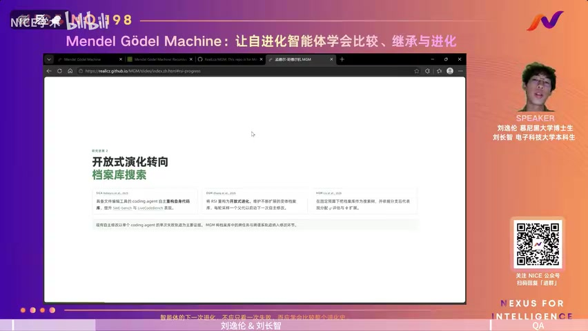
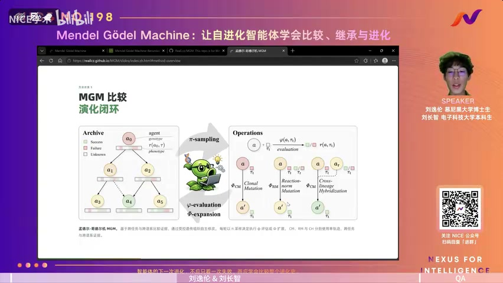
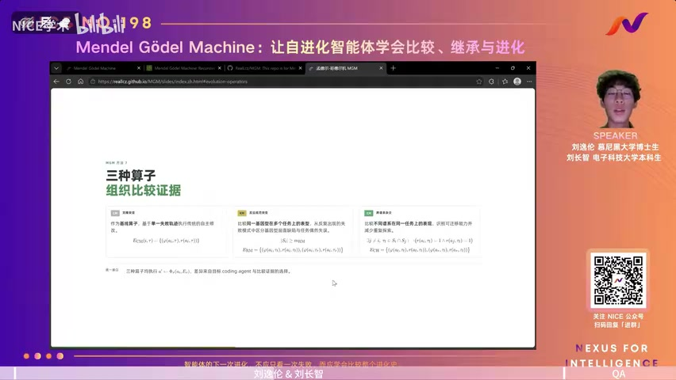
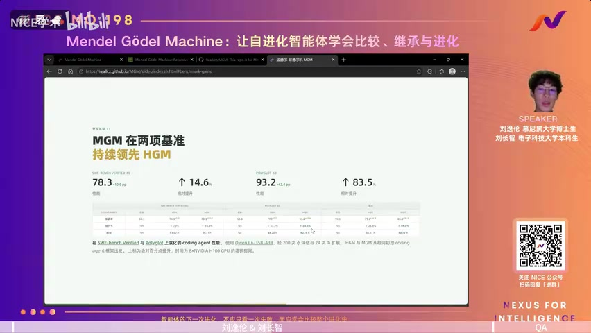
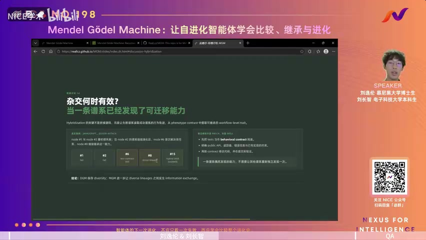
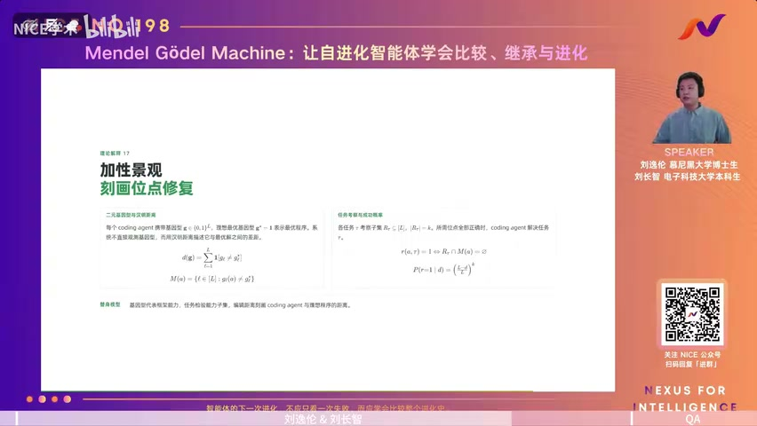

01｜RSI背景与MGM核心思想
00:00:00主持人大家好，感谢主办方的邀请，也欢迎大家参加今天的论文分享。因为自我提升（Self-Improvement，简称 SI）是迈向更强人工智能系统的一个重要方向，也是当前非常热门的研究话题。所以今天我们要介绍的论文是《Mendel Gödel Machine》，它围绕模型如何通过自我修改实现持续提升，相信会给大家带来不少启发。今天的分享由论文的两位共同第一作者共同完成。
00:00:30主持人第一位是刘长志，目前是电子科技大学软件学院本科生；第二位是刘一伦，目前在慕尼黑大学计算机科学系攻读博士学位，师从Volker Tresp教授，此前毕业于慕尼黑工业大学和西安交通大学钱学森学院。他的主要研究方向是大语言模型的能力边界与内部机理，包括递归自我提升机制（RSI）、可解释性以及高效模型架构设计等。下面我们请刘长志为大家讲解论文的 background 和 methodology 部分，然后刘一伦为大家介绍论文的 experiments 部分，欢迎大家。
00:01:11主持人下面开始。
00:01:14刘长志 · 作者好的，那我首先从 background 开始。在正式介绍我们的方法之前，我们可以先讲清楚：RSI 这条研究路线到底在解决一个什么样的问题？我们今天已经拥有非常强大的基础模型（foundation model），也有了越来越强的编程智能体（coding agent）。但绝大部分 agent 仍然是一个静态系统——它的 prompt、工具或整个工作流，都是由人搭建和设定的。
00:01:50刘长志 · 作者因此，尽管模型本身能完成越来越复杂的任务，但‘如何使用这个模型’——也就是如何通过一套策略来调用它——本质上仍依赖人工优化。而 RSI 想要解决的是一个更激进的问题：能不能让 AI 不只是完成任务，而是能够修改自己完成任务的方式，并让这种修改不断递归地传递下去？这个思想其实早在很久以前就已出现。
00:02:22刘长志 · 作者比如一些早期的自学习系统，包括 Gödel Machine，都在尝试回答这个问题。Gödel Machine 在数学理论上给出了一个非常优美的框架：一个系统可以阅读并修改自己的代码；如果它能形式化证明某次自我修改将提高未来的期望收益，它就执行这次修改。因此，它从理论上回答了一个关键问题：什么时候应该修改自己？
00:02:58刘长志 · 作者但这个问题在现实中显然存在明显挑战，因为现实世界的智能体并不是一个能被完全形式化的系统。例如，我们给编程智能体新增一个编辑器工具，或引入某种上下文管理策略，或要求它在执行前多做一次回顾——这些改动，我们很难在数据层面严格证明：加入该模块后，它在未来所有任务上的期望性能一定提升。所以 Gödel Machine 给出了一个漂亮的理论目标，却难以被直接应用于实际系统。
00:03:36刘长志 · 作者不过，大语言模型和固定接口（如标准 API 或工具调用协议）的出现，在一定程度上改变了这种情况。因为现在出现了一个非常自然的自我参照场景：修改一个编程智能体，本身就是一个编程任务。一个 coding agent 可以读取自己的代码、分析自身行为、修改自己的 prompt、甚至重构自身的 workflow。而且，我们现在已有像 SWE-bench 这样比较成熟的基准测试，可用于评估某次修改是否真正提升了能力。
00:04:16刘长志 · 作者因此，在这种背景下，Gödel Machine 所要求的严格理论证明，就可以被替换为经验性的自我提升（empirical self-improvement），从而让我们真正把整个自我修改闭环运行起来。第一个代表性工作是 Self-Improving Coding Agent：它非常直接地验证了这一点——给一个具备文本编辑能力的固定 agent，让它读取自己的代码库，分析自身缺陷，并据此直接执行自我编辑；修改完成后，在 SWE-bench 上进行评估，再决定是否保留该修改。
00:04:59刘长志 · 作者它的意义不仅在于把 benchmark 上的性能从某个数值提升到另一个数值，更重要的是证明了：基于大语言模型的智能体，能让自我修改从一种理论概念，变成一条真正可运行的工程路径。由此，我们获得了一个非常清晰的闭环：从评估（evaluate）、诊断（diagnose），再到自我编辑（self-edit）。但这种方式很快会引出一个自然的问题：这种单线程的、递归式的搜索，如果在某次自我修改中埋下了隐患，那么该隐患就会在后续层层递归的修改中持续累积，可能导致崩溃等问题；其次，它容易陷入局部最优，因为它本质上是单线搜索。
00:06:06刘长志 · 作者我们知道，如果想要解决局部最优的问题，肯定不能只沿着一条线往下搜索。所以下一个问题就变成了：我们应该从哪一条 self-improvement 路径继续走？这就是 MGM 解决的问题——它不再只维护一条单线的 evolution trajectory，而是维护一棵 evolution tree。每次产生一个新的 agent，只要它还保留最基本的 code base，就可以进入这个 evolution。未来进行 evolution 时，我们也不一定从最新版本出发，也不一定从 performance 最好的版本出发。
00:06:54刘长志 · 作者我们可以回到 evolution tree 中任意一个历史节点，再从那里生成新的 branch。这实际上把原本单链式的自改进，变成了完全 open-ended 的进化过程。这个变化非常重要，因为一个可能短期表现不好的 modification，并不代表它永远没有价值。
00:07:20刘长志 · 作者就像 DM 自己的 evolution 过程所展示的那样，最终表现最好的那条路径，在中间其实经历过一些 performance 下降的节点——这些暂时变差的节点，反而可能是通向未来更优 solution 的 stepping stone。但即便我们采用了这样的 evolution 方式，也带来了一个新问题：在做 tree search 时，下一步到底该选择哪一个 node 进行 expand？最直观的方法可能是直接按 performance 排序。
00:07:53刘长志 · 作者但 MGM 指出，一个 agent 当前的 performance 强弱，和它持续进化的潜力并不等价。比如一个当前得 90 分的 agent，可能已经接近这条路径的天花板；而另一个当前只有 80 分的 agent，它的天花板可能在 95 分。因此，MGM 把这个问题定义为一种 ‘capability productivity and performance mismatch’，并采用了一种 Monte Carlo tree search（MCTS）思想：不再只看 node 自身的 performance，而是评估从这个 node 出发、其整个子树所能带来的平均效益。
00:08:35刘长志 · 作者它也采用了 MCTS 这一非常经典的 family 方法，来决定如何分配下一步的 expansion budget 或者说 evolution evaluation budget。所以我们看到一条非常清晰的发展路线：从 S3 到 DM 再到 MGM，它们都在解决同一个问题——‘我们应该从哪里进行进化’，而且解决方案是逐步优化、越来越好的。但到这里，我们认为还有一个非常重要的问题，尚未得到同等程度的关注。

00:09:13刘长志 · 作者就是当一个 node 被选中之后，我们应该如何更好地改进它，也就是如何提高每一次 self-improvement 本身的质量。这个问题在 DM 自己的实验中已经非常明显：MGM 在 SWE-bench 上一共进行了 80 轮 evolution；为了避免把大量 evaluation budget 浪费在完全失效的 agent 上，它首先会用一个包含 10 个 task 的小型任务集，检测一个新生 agent 是否还维持最基本的能力。那结果是什么呢？
00:09:51刘长志 · 作者在整个 evolution 过程中，只有 51% 的 agent 能通过这个最基本的功能测试。也就是说，从一个能完成基本任务的 agent 出发，它生成的一半结果，已经连最基本的能力都无法维持了。这里我们并不完全是说用于修改的模型太弱——因为 DM 实验中用的是 o1，而 self-edit 用的是 claude，当时已经是 very strong model 了。
00:10:27刘长志 · 作者但即使在这样的配置下，self-modification 依然是一个非常 noisy 的过程。这就导致效率非常低，执行成本也大大提高了。所以，尽管 MGM 比较好地解决了‘如何做 open search’这个问题，
00:10:58刘长志 · 作者它能在存在大量质量较低的进化结果时，依然靠 open-ended 性质维持整体效果。但如果我们的目标是更进一步靠近 RSI（Recursive Self-Improvement），我们认为，仅仅依靠 open-ended 特性来容忍 bad location 是不够的。因为真正的 RSI，我们最终希望得到的，不是大量随机试错、偶尔撞出一个好版本；而是随着系统积累越来越多的经验——包括它的执行轨迹、包括 agent 自身的 code base——它也应该越来越懂得如何修改自己。
00:11:43刘长志 · 作者随着这个自我改进（Recursive Self-Improvement）过程的推进，它本身也应该变得更加可靠、更加高质量。因此，我们开始关注一个完全不同的问题：从档案库已有的知识出发，我们能否不只是优化进化方向，还要直接提升每一步进化的质量？我们的出发点是，整个进化档案（archive）并不仅仅是一个用于遴选优秀智能体（vagent）的排行榜（leaderboard），它本身就是一个数据集。因为当前的进化过程已经产生了大量可用于此目的的信息，包括评估轨迹（evaluation trajectory）和智能体自身的代码基底（base）。
00:12:30刘长志 · 作者每个智能体都在大量基准任务（benchmark task）上接受过测试。这些测试不仅记录最终的成功或失败结果，还完整保存了执行轨迹：智能体做了什么操作、调用了哪些工具、获得了怎样的反馈，以及最终为何成功或失败。但过去的方法对这些信息做了非常强的压缩——往往直接丢弃了大部分评测轨迹或代码基底，只保留一个单一分数；在进化阶段，也通常只选取其中一条轨迹来驱动后续改进。有些方法甚至仅依赖基准分数来选择下一代智能体，再基于单条轨迹完成进化。
00:13:22刘长志 · 作者本质上，这些方法都没有充分利用整个数据集。因此我们认为，这个档案库绝不应被简单理解为一个排行榜。它实际上包含了大量跨任务、跨智能体的对比性信息（comparative information）。而且这些数据是整个RSI过程的自然副产品，我们无需额外投入昂贵的标注或人工评估成本去重新获取。
00:13:57刘长志 · 作者问题于是进一步转化为：我们该如何组织这些评估轨迹和代码基底，才能让它们直接服务于下一次的自我修改？我们的答案来自两种非常自然、且完全对称的对照实验（control comparison）。这里我们也参考了前人工作的命名方式，比如MAP——从那时起，研究者就将智能体的整个代码基底称为一种‘通用表型’（general phenotype）。
00:14:32刘长志 · 作者而它在所有任务上的综合表现——包括性能、行为模式等——我们称之为‘类型’（type）。
02｜Reaction-norm 与跨谱系杂交
00:14:40刘长志 · 作者第一种对照方式是固定智能体及其通用表型，改变环境（即任务）。我们固定一个智能体，在大量不同任务上观察它的表现。例如，如果一个智能体仅在一个任务上失败，我们很难判断这是它自身的问题，还是该任务本身比较特殊。
00:15:01刘长志 · 作者但如果它在十个甚至更多任务上反复出现同一种错误模式——比如总是在长上下文（long context）中丢失关键信息，或总是在调用工具后缺乏充分验证——这种共性就极具价值。因为它提示我们：这很可能不是某个任务特有的缺陷，而是整个智能体框架本身的系统性弱点。这一概念并非我们首创，在生物学中，同一基因型（genotype）在不同环境下表现出的表型模式，被称为‘反应规范’（Reaction-norm）；我们借用这一术语，为这种学习范式命名。
00:15:51刘长志 · 作者于是，问题就从‘这道题为什么错’，升级为‘这个智能体系统性地在哪里出错’。第二种对照方式则刚好相反：我们固定环境（即固定一个任务），改变智能体，在同一道题上比较不同智能体的行为。过去我们只问‘为什么失败’，现在我们还会问‘为什么另一个智能体成功了’。
00:16:21刘长志 · 作者甚至进一步追问：为什么两个结构完全不同、执行轨迹也截然不同的智能体，最终却都失败了？我们将这种‘同一任务、不同智能体’之间的对比信号，称为跨智能体对照（cross-agent comparison）。最后，我们把背景总结为：MGM（Mendel Gödel Machine）想探讨的核心问题是——既然进化过程已为我们积累了如此海量的数据，我们能否像研究生物性状一样，通过控制对照分析，识别出哪些模块应当被修复、哪些应当被继承？从而让整个自我改进式的变异（self-improve mutation）变得更明智（informative）、更可靠（reliable）？
00:17:03刘长志 · 作者我们这项工作被命名为‘window式沟通模型’。接下来，我们将具体介绍MGM如何把这两类学习思想真正转化为一种self-modification operator。首先，我们的MGM继承了HM search的框架：在how层面，我们仍沿用此前方法中非常经典的search策略。
00:17:46刘长志 · 作者在评估设计上，我们做了一个小优化和一个大优化。可以简单理解为：传统方法优化的是selection policy，而MGM优化的是self-modification evidence——即在一个parent agent已被选出后，我们究竟该向modifier提供哪些信息。这正是我们方法最核心的切入点。
00:18:20刘长志 · 作者这一页展示了MGM完整的框架。左侧是我们持续维护的一个evolutionary archive，其中每个node代表一个coagent，也就是一个具体的skill或其执行的workflow。我们将其在不同task上产生的运行轨迹与成功/失败结果，都视为一种经验，并保存在对应node中。每一轮evolution，我们通过selection policy决定执行哪一类operator。
00:19:06刘长志 · 作者最主要的区别就发生在expansion环节。过去的方法通常只基于单条trajectory完成进化；而我们将archive中已有的comparative information重新组织，构建出更丰富的证据结构。因此，在实际设计中，我们把进化operator拆分为三个部分。
00:19:38刘长志 · 作者其中两个就是前面提到的Reaction-norm Mutation和Cross-lineage Hybridization，分别对应我们介绍的两种学习范式。同时，我们也保留了最基本的进化方式——clone mutation。之所以保留它，部分原因在于训练初期数据尚不丰富，尚不足以支撑Reaction-norm Mutation或Cross-lineage Hybridization。

00:20:12刘长志 · 作者此时，我们需要clone mutation来完成原始能力的积累。接下来，我们将背景中已介绍的两种直觉，正式映射到evidence construction中。第一种comparison是same agent, different environments：固定一个AI agent，比较它在不同task上的运行轨迹。
00:20:43刘长志 · 作者例如，假设该agent仅在某个target task上失败，过去我们可能只分析这一条失败轨迹；而现在，我们能同时看到同一agent在多个task上的多条轨迹，从而构成一种reaction。这里的reference trajectory不一定是失败轨迹——我们既希望它从失败轨迹中学习教训，也希望它能从成功轨迹中提取经验。第二种comparison则完全对称：same environment, different agent types，即固定在同一task上，比较不同agent的表现。
00:21:35刘长志 · 作者我们分析为什么某个agent成功、另一个失败，或者为何多个完全不同的agent都在该task上失败。从这个角度看，MGM的核心思想高度统一：我们并非简单堆叠上下文，而是将历史记录转化为一种control experience。这里我们形式化定义了三个operator。
00:22:02刘长志 · 作者第一个是clone mutation：它既是baseline，也是训练早期原始能力积累的手段，确保后续进化能够顺利启动。第二个operator适用于已有足够多失败轨迹的情形——在实验中，我们设定阈值s_i > M（M设为2），即至少存在两条不同失败轨迹，才能开展comparison。通过这种方式，系统可从中思考是否存在共性的behavior pattern。
00:22:51刘长志 · 作者第三种 operator 的设计思路则完全相反。为了实现 cross-lineage hybridization，我们额外维护了一个机制：因为之前的工作在评估 agent 时，要么是对所有 agent 进行大量全覆盖测试，成本很高；要么是按固定顺序依次将全部题目抽取出来，分发给不同 agent 完成。但这种顺序分配方式虽然成本低，却很难保证不同 agent 都做过相同的题目。

00:23:42刘长志 · 作者因此，这种方式不太利于我们第三种 operator 的展开。为此，我们维护了一个统一的失败任务池，汇总各 coding agent 已发现的所有失败任务。当为新 coding agent 进行任务采样时，我们会提高这些失败任务在采样分布中的权重。这里展示的是我们实际进化过程中的一个具体例子。
00:24:17刘长志 · 作者图中既有传统的 closed mutation，也有我们定义的 reaction-norm mutation，还有用虚线标出的 rerun agent。主要实验结果是：我们在 SWE-bench 上以 Qwen 3.6B 作为基础模型启动进化，初始准确率约为 50%；最终进化得到的 agent 达到 93.3%，高于 HGM 的 79%，甚至超过了参数量可能达 3T 级别的 GPT-5，在同等评测条件下取得了更好效果。
00:25:16刘长志 · 作者这是我们在两个 benchmark 上的进化结果：SWE-bench 和 Poly。可以看到，无论是软件工程这类真实场景任务，还是多任务泛化场景，我们的 MGM 都持续优于 HGM。从时间维度看，由于采用相同的 search policy，我们并未通过增加搜索时间来换取性能提升。接着我们思考：这种优异效果是否具备泛化能力？第一个泛化实验，是在 Poly 上演化 coding agent，再直接迁移到其他 benchmark 上测试。

00:26:15刘长志 · 作者我们在 Poly 上演化出 coding agent 后，将其直接迁移到 HumanEval 和 SWE-bench 上。结果发现：MGM 演化出的 agent 不仅相比初始 agent 有明显提升，其效果也优于 HGM 演化出的 agent。这说明 MGM 不仅在元进化 benchmark 上表现更好，迁移到其他 benchmark 时也展现出更强的泛化能力。我们进一步追问：这种泛化能力能否延伸到其他 benchmark？
00:27:11刘长志 · 作者但我们担心：这个 agent 是基于 Qwen 进化出来的，会不会过度拟合 Qwen 自身的行为模式或输出习惯，从而难以迁移到其他基础模型上？为此我们做了另一组实验：保持 agent 架构不变，仅将 foundation model 从 Qwen 替换为 DeepSeek。结果显示，无论迁移到 HumanEval 还是 SWE-bench，其准确率仍显著高于 HGM 对应的迁移结果。这两个泛化实验共同说明：MGM 的泛化性不仅体现在跨 benchmark，也体现在跨 foundation model。
00:28:03刘长志 · 作者接下来做一个简要讨论。我们提供了一个案例研究，试图解释为什么 hybridization 能起作用。这里展示了一条真实的进化路径：对应的任务可能是 JavaScript 的 'Green attack'。最初，node one 和 node two 都在这个任务上失败了。
03｜比较证据提升修复精度
00:28:36刘长志 · 作者node two 在持续进化中衍生出一条分支，生成了 node six；而 node six 第一次成功解决了该任务。我们进一步分析 node six 可能学到了什么能力，发现它实际上形成了一种 workflow，即一种 test-and-contract 技能，正是这一技能帮助它完成了该题目。

00:29:04刘长志 · 作者但是我们看到另一条分支，到目前为止还没有解决这个任务。这时它通过一个cross-lineage hybridization操作，从note six将能力迁移到了另一条分支上的note eight，这个能力就被note eight继承下来了。因此note eight同样可以解决这个JavaScript的tag任务。到这里我们就想到：如果只有普通的单链mutation，那这种能力在未来相当长的一段时间里，可能都只会局限在note two到note six这条链内传播。
00:29:50刘长志 · 作者它可能要等到非常久之后，才会偶然出现在其他分支中；即使出现了，也没办法扩散到整个archive中。但我们这里的MGM不一样——从一条 lineage 进化出的效果，可以通过cross-lineage hybridization在整个archive中传播。因此，从这个case study中我们就能看出，它能明显提升整个search过程的效率。
00:30:25刘长志 · 作者第二点，我们在前面generalization实验中已经证明了模型具备较好的泛化能力。接着我们思考：为什么进化出来的这些能力——无论是prompt close还是workflow——会具有更好的泛化性？我们对每次进化的diagnostic做了seembedding，把diagnostic信息编码后进行可视化，这里可以展示一下。
00:31:10刘长志 · 作者我们可以看到一个明显区别：MGM产生的modifications并不是高度分散的，而是相对集中。相比HM，它在embedding空间中更紧凑、更聚集。也就是说，尽管这些modifications完全来自不同的base model，它们却更倾向于收敛到同一个workflow，或围绕同一类workflow进行修改。因此，它产生的不是某种特定编程语言的专属技巧，也不是某条hard-coded的rule，而是可复用于大量software engineering task的一个通用过程。
00:32:07刘长志 · 作者当然，HM也能产生很多有价值的modifications，比如连续迭代的test，或者context discovery这类功能。但你在embedding空间中可以看到，它们的分布更加分散。也就是说，HM实质上在探索大量不同的interventions；而MGM更容易聚焦于真正有效的、workflow-level的能力。
00:32:35刘长志 · 作者然后我们持续优化、继承与传播。这里有一个非常重要的区分：我们所说的‘general’，并不是在prompt里写一句‘请提升泛化能力’就能实现的；真正的operational定义是——这个modification能否脱离它最初产生的那个具体instance，在其他任务上仍作为一个reusable的procedure正常工作。我们最终的实验也证实了这一点，两个结论相互佐证。
00:33:15刘长志 · 作者第三点讨论是：既然这种competitive evidence这么有效，那self-improvement是不是就可以简单地直接scale？其实并没有这么简单。我们回顾整个self-improving过程，发现有两个非常关键的前提。第一，我们必须拥有高质量的evidence——比如reaction-norm mutation、cloumutation或cross-lineage hybridization，这些都要求我们有多个agent，并且每个agent都经历了多个environment。这一点，在我们当前设置中已经较好地满足了。
00:34:08刘长志 · 作者第二，也是更重要的问题：有evidence，并不代表模型能正确理解evidence。也就是说，模型自身的reasoning能力，是我们最终能否成功实现self-improvement的一个关键前提。我们这里也做了一个分析：把方法scaling到更大的模型上。直觉上讲，它是不是应该带来更好的效果呢？
00:34:40刘长志 · 作者至少从相对准确率来看，我预期模型会比H7M等基线有更好的效果，但实际并非如此。我们分析原因发现：Queen3 Coder Next是专为编程任务设计的，但其通用推理能力相对较弱。因此，即使我们提供了更高质量的证据和更精准的诊断结果，模型也未必能真正理解这些证据。所以在整个自优化过程中，我们认为编程能力、推理能力，尤其是通用推理能力，具有同等重要性。
00:35:33刘长志 · 作者因为在整个自改进（Self-Improvement）过程中，多步推理器需要完成非常复杂的推理步骤——它需要理解两条轨迹，识别出行为之间的真实差异。如果模型缺乏足够强的推理能力，就无法保证从更好的证据可靠地生成更好的修改。这解释了为什么单纯扩大模型规模，并不等于获得更强的自改进效果。
00:36:09刘长志 · 作者我的讲解就到这里，接下来请另一位作者为我们介绍整篇论文的理论框架。谢谢大家。
00:36:31刘一伦 · 作者好的，接下来由我来讲解本文的理论部分。首先，我们构建了一个大家现在看到的屏幕内容。主持人，我们的共享屏幕还能正常显示吗？要不我重新分享一下。
00:37:09主持人我来吧，分享一下。
00:37:18刘一伦 · 作者大家能看到吗？
00:37:24刘长志 · 作者可以，可以。
00:37:25刘一伦 · 作者好的。我们首先借鉴了生物学中一个经典概念——适应性景观（fitness landscape），它把不同基因型及其相互作用建模为一种地形式的结构。我们以此作为基础框架，构建了一个可控制变量的演化模型。具体来说，我们将每个智能体的‘类型’（type）表示为一个固定长度的二进制向量。
00:37:58刘一伦 · 作者该向量的每一位对应一个极小粒度的能力单元，比如某类编码操作、某类工具调用，或是某个基础框架级能力的实现或选择。整个探索空间即由该向量构成的完备二进制空间。当我们指定一个理想状态下的最优智能体类型（即‘Oracle’方向），就可以在这一高维空间中，通过多种测量方式，直接量化当前智能体向量与Oracle向量之间的距离，从而反映其尚存的优化空间。

00:38:44刘一伦 · 作者这个距离间接表征了模型当前能力水平。由于向量空间具备完备的度量结构，当距离为零时，意味着模型已从任意初始状态收敛至最优Oracle状态。一个巧妙的设计在于：这种通用类型的向量可通过实验层与演化过程隔离，使其无法被扩展过程直接观测到。
00:39:23刘一伦 · 作者每次评估任务时，系统仅检验若干特定‘基因位点’；只有当所有被检验位点均符合任务要求，才给出正确反馈。而模型在扩展过程中所关注的轨迹，也仅限于各任务中实际暴露出来的那些行为片段。因此，它只能以一定概率修正那些在任务中被检验到的对应位点。
00:40:05刘一伦 · 作者如果模型能力不足，甚至可能将原本正确的位点错误翻转。在大量模拟场景下，我们便能借助数据建模手段，完整仿真模型如何从初始状态逐步演化至接近最优的状态，并可在任意时刻观测其内部状态。
00:40:38刘一伦 · 作者它评估单个题目、整个 benchmark，以及当前状态距离理想 oracle 状态的距离。我们在这里论证了：为什么 MGM 的这套设置，理论上能提高最终接近 oracle 状态的概率。因为 edit 和 expansion 过程本身看不到隐藏的错误点位。所以传统方法——仅复制上一个 agent 的副本，并仅基于一条失败轨迹进行修改——存在根本局限。
00:41:21刘一伦 · 作者它只能依据这一条轨迹的证据，构造出一个非常受限的错误点位集合，在其中尝试修复。如果我们固定其他变量，就可以讨论某个特定模型的修复能力：它对任意状态下任一真假点位的修复成功概率是固定的，记为 S——即无论点位在哪种状态，模型都有概率 S 修对，也有概率 1−S 修错。
00:41:54刘一伦 · 作者因此，有效修复概率可直接表示为 S 乘以候选集中真实错误点位所占的比例。而由于传统方法只观测一条失败轨迹，它获得的信息仅限于该题的这条失败路径：仅能确认这条轨迹中至少有一个点位出错，候选集因而覆盖整个可能的点位集合。
00:42:25刘一伦 · 作者在我们的 MGM 框架中，我们额外引入了 Reaction-norm Mutation：比较相同类型（same genotype）在不同任务上的表现。
04｜泛化风险与RSI范式辨析
00:42:34刘一伦 · 作者这让我们获得更丰富的证据：当观测到同一基因型的多条轨迹反复失败，且共享相同缺陷时，对于修复概率固定为 S 的模型，就能构建出更准确、更精确的候选错误点位集合。由此可严格推导出：MGM 完整修复所有失败点位的概率，高于传统方法。此外，我们还引入 Cross-lineage Hybridization：比较同一任务下不同基因型（different genotypes）的表现，参考成功 agent 的轨迹，起到迁移式对照作用。
00:43:19刘一伦 · 作者这样就能将某个固定任务的历史修改记录中，与因果无关的点位直接过滤掉。因此我们可以严格推出：MGM 对错误点位的有效修复覆盖率，高于仅依赖单一突变的方法。我们在完整论文中给出了详细推导。直观来说，这些基于比较的证据（comparative evidence），并不依赖更强、更智能的 editor 模型。
00:43:59刘一伦 · 作者它更本质的作用是缩小并净化模型自我修改时需要搜索的缺陷集合——也就是模型真正需要考察的那个点位集合。因此，我们可通过覆盖率参数化建模，并在数值上设计实验，定量分析 MGM 相比 baseline 在不同场景下的收益。这里展示了直观的 simulation：红色代表 DGM，蓝色代表 HGM，绿色代表我们的 MGM。可以看到，无论初始距离如何（即任务难度不同，对应从初始状态演化至 oracle 所需的修改步数不同），MGM 都能稳定地收敛到更接近 oracle 的距离，且收敛速度更快。
00:44:50刘一伦 · 作者最后，我们使用十个不同随机种子采样，得到统计分布。结果表明：MGM 的收敛分布相比 DGM 和 HGM 这两类 baseline 更集中、更精确。这直接说明，MGM 不仅让最终理想状态的分布更优、收敛更快，而且方差更小——体现出更强的稳定性与优势。
00:45:43刘一伦 · 作者我们这篇论文的主要工作就是这些。首先，我们通过一系列实验，包括在迁移数学集上的迁移能力测试，以及跨模型的迁移实验，展示了MGM在真实数据上的表现。同时，我们也详细提供了多个案例研究（case study）和讨论（discussion），来论证模型在不同场景下的行为，以及性能提升的具体来源。最后，我们还通过一些仿真（simulation），进一步提供了更多对比性证据，来支持我们的方法。
00:46:26刘一伦 · 作者在对type进行修改时，我们的方法能在最终type上展现出更优的质量、更快的速度，以及更窄的性能分布。这是我们目前的主要工作。此外，在这一研究路线上，我们还有许多相关的后续研究设想。这里也顺便做一个小广告：我们团队拥有较多集群算力资源，可为合作提供支持；目前也有一些开放职位（open position），主要面向PD方向。
00:46:58刘一伦 · 作者如果大家有兴趣，欢迎通过微信联系我。
00:47:04主持人好的，非常感谢刘长志和刘一伦的精彩分享。相信各位现在对Mendel Gödel Machine（MGM）以及Recursive Self-Improvement（RSI）已经有了非常深入的认识。接下来我们进入问答环节——如果大家对论文的方法、实验设计或未来研究方向有任何问题，都欢迎向两位作者提问。在准备过程中，我也收集了一些问题，我们先从这些已有问题开始。
00:47:35主持人第一个问题是：有听众提出，我们的方法会不会严重过拟合benchmark？这种跨benchmark的方法，会不会把benchmark特有的偏差也学过去？
00:47:51刘一伦 · 作者这是一个非常好的问题。我们在实验中专门研究了cross-benchmark迁移能力，具体对比了HM模型的表现。可以明显看出，HM在这方面表现非常差。
00:48:09刘一伦 · 作者它在POL数据集上训练出的框架，迁移到那些难度更高、面向真实代码仓库级别的软件工程任务（如SWE-bench）时，性能甚至比初始未演化的状态还要更差。这意味着它在演化过程中很可能发生了过拟合（overfitting），并学到了仅适用于POL数据集的特有特征，而不是解决整体问题所需的通用能力。而MGM在演化过程中接收了更丰富、更多样化的输入，包括大量对比性证据（comparative evidence）。
00:49:00刘一伦 · 作者这使得它在整体上对理想解（oracle）的逼近程度，远超baseline。我们在理论分析中也尝试探讨了这一点，实验结果同样支持该结论——MGM具备很强的跨不同benchmark的迁移能力，其跨模型迁移能力也为这个问题提供了佐证。
00:49:24刘一伦 · 作者我们已有的一些证据表明，MGM的过拟合程度显著优于baseline。
00:49:38主持人好的，感谢回答。还有另一位听众提问：这项工作究竟属于AI还是automated agent？
00:49:49刘一伦 · 作者这也是个很好的问题。RSI作为一个较新的研究范式，其核心定义在于recursive self-improvement——其中‘递归’过程本身是最关键的。只要整个改进流程是自动化的，就可以认为属于RSI范畴。但严格来说，RSI要求‘执行改进的主体’与‘被改进的对象’必须是同一个系统。这一界定能更准确地描述我们这套工作，包括Gödel Machine、Mendel Gödel Machine，以及本文提出的MGM等所有‘machine’范式。
00:50:32刘一伦 · 作者此外，也存在一些非machine形式的RSI系统，它们更准确的描述应使用‘AI agent’一词，以精准刻画其递归性与自改进行为。因此我们认为，这两个表述并不冲突，关键在于更精准地描述我们工作的本质。
00:50:54主持人是的，非常同意——RSI更多是Gödel Machine系列工作的延续。另外第三个问题是：这篇工作是否相当于多智能体进化？您认为多智能体在智能体自进化研究中可以起什么作用？是否能够辅助智能体进化？
00:51:14刘一伦 · 作者对，这是一个很好的问题。严格来讲，我们这篇工作其实不能算作多智能体系统，因为每一次对 agent 的自我修改，其操作对象都是单个 cot-agent 自身。但在演化过程中，这个 agent 可能会主动扮演不同的角色——比如为自己构建一个 workflow；在解决 task 时，它内部一部分模块负责实际解题，另一部分则观测自己的解决轨迹，并尝试做分析。
00:51:48刘一伦 · 作者还有一部分模块则处于该轨迹之外：当模型对自己做修改时，它又同时扮演一个审计与审查的角色。因此，我们也可以认为‘多智能体’这个概念本身比较宽泛，它可以用来描述整个 I-System 这样的系统——整个系统本身可视为一个多智能体系统；但最终交付的结果，仍是一个单个 cot-agent 完成的任务。
00:52:16刘一伦 · 作者关于后半部分这个问题，我觉得它确实是非常好的研究方向：多智能体是否能够进一步辅助 agent 的 self-improvement，以及智能体自身的进化过程？这目前是一个非常前沿、也非常有价值的研究领域。我们自己也有一些相关的想法和工作正在往这个方向推进。
00:52:44主持人感谢回答。确实，多智能体的自主化也是我们在研究的方向之一，而学术界目前已有一些相关工作。这也正好回应了第四个问题：另一位听众提问——您觉得目前智能体自主化还有哪些值得研究的点？我们刚才已提到了多智能体自主化。
00:53:06刘一伦 · 作者对，目前这个领域其实还处在刚刚兴起的阶段，因此仍有不少‘低垂的果实’可以采摘。比如，研究正逐步从传统的 coding、数学等任务，拓展到 physical 场景，或更复杂的、牵涉真实世界交互的自主化问题。无论是在横向的跨领域拓展，还是纵向的细分任务深化中，都存在大量值得探索的方向。
00:53:40主持人OK，好的。最后一个问题是：未来是会有一个统一的 harness 计划落地，还是针对不同任务分别训练出不同的 harness，就像 Just-in-Time 那样？
00:53:54刘一伦 · 作者我们认为这两种路径在未来都会有各自的应用场景。针对某个单独任务定制的 harness，其意义在于更高的执行效率；尤其当任务有非常具体的工作流、明确的 scale 设定或工具调用规范时，定制 harness 往往能取得更好效果。而通用型 harness——比如大家熟悉的 Cloud Code 等系统——则更侧重提供一种通用能力。
00:54:30刘一伦 · 作者它不预设具体任务，而是保证：无论给定什么任务，至少都能跑起来。因此，这两类 harness 实际上关注的是不同维度的目标。这也可以类比 AGI 和 ASI 的区别——即人工通用智能（Artificial General Intelligence）与人工超级智能（Artificial Superintelligence）的差异：前者追求广泛适用的通用能力，后者则聚焦于特定任务上达到超越人类水平的最高阶智能表现。
00:55:02主持人好的，感谢一伦的回答。目前之前提出的问题基本都已覆盖，一伦也给出了相应解答。如果大家还有其他问题，欢迎通过线上渠道、直播平台继续提出；若没有，我们今天就可以基本结束了。
00:55:32刘一伦 · 作者好的，感谢大家。也感谢各位观看我们的分享。
00:55:38主持人一伦，你可以翻到最后一页，就是那个微信二维码。如果大家感兴趣，比如科研合作，或者新的博士岗位信息，都可以通过它联系。
00:55:47刘一伦 · 作者对的，欢迎大家通过微信联系我们。
00:56:00主持人哦，还有朋友问：课件在哪里获取？应该是哪个 list？朋友们可以回答一下——应该会有录播吧？对，是的，录播会有的。好的，那感谢大家，我们今天就到这里。